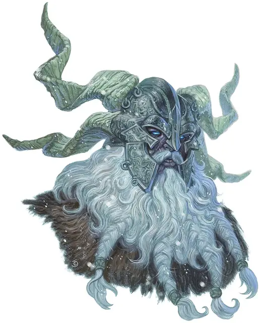

Ярл Сторвальд
Jarl Storvald
Огромный Великан, нейтрально-злой, именной НИП

Класс Доспеха 15 (лоскутный доспех)
Хиты 138 (12к12 + 60)
Скорость 40 футов
| мод | спас | ||
|---|---|---|---|
| СИЛ | 23 | +6 | +6 |
| ЛОВ | 9 | −1 | −1 |
| ТЕЛ | 21 | +5 | +8 |
| мод | спас | ||
|---|---|---|---|
| ИНТ | 9 | −1 | −1 |
| МДР | 16 | +3 | +6 |
| ХАР | 16 | +3 | +6 |
Навыки Атлетика +9, Восприятие +6
Иммунитет к урону холод
Чувства пассивное Восприятие 16
Языки Общий, Великаний, Язык Гигантских сов
Опасность 8 (3900 опыта)
Бонус мастерства +3
Особенности
Особое снаряжение. У Ярла есть камень с руной Блод [blod Stone] , прикрученный к 50-фунтовой железной цепи, которую он носит на шее.
Действия
Мультиатака. Ярл совершает две атаки секирой.
Секира. Рукопашная атака оружием: +9 к попаданию, досягаемость 10 футов, одна цель. Попадание: 25 (3к12 + 6) рубящего урона.
Камень. Дальнобойная атака оружием: +9 к попаданию, дистанция 60/240 футов, одна цель. Попадание: 28 (4к10 + 6) дробящего урона.
Использование заклинаний. Ярл накладывает одно из следующий заклинаний, не нуждаясь в никаких материальных компонентах, и Интеллект является для них базовой характеристикой Ярла (Сл спасброска от заклинания 14; +6 к попаданию атаками заклинаниями):
• 1/день каждое: прыжок [jump], поиск животных или растений [locate animals or plants], поиск предмета [locate object],
Описание
Ледяные великаны — громадные грабители с морозных земель, что лежат за гранью цивилизации — это жестокие, выносливые воины, живущие за счет добычи с набегов и грабежей. Они уважают лишь грубую силу и боевые навыки, демонстрируя их шрамами и отвратительными трофеями, полученными от врагов.
Ледяные сердца. Ледяные великаны это существа льда и снега. Их волосы и бороды бледно-белые или светло-голубые, скованные морозом и гремящие сосульками. Их плоть синяя, словно ледник.
Ледяные великаны живут на высоких пиках и в ледяных ущельях, где золотая голова солнца скрыта зимой. Зерновые не прорастают в их морозных селениях, а скота, по сравнению с тем, что захватывают в налетах на цивилизованные земли, держат мало. Они охотятся за дичью в тундре и горах, но не готовят её, так как мясо только что убитой добычи слишком горячо на их вкус.
Грабители во вьюге. Боевые рога ледяных великанов ревут, когда они выдвигаются из своих ледяных крепостей и ледниковых разломов во время завывающей бури. Когда же буря утихает, деревни и фермы лежат в руинах, а вороны слетаются пировать на трупах тех, кто был достаточно глуп или не везуч, чтобы встать на пути великанов.
Постоялые дворы и таверны больше всего страдают от причиненного урона — их подвалы пусты, и бочек эля и меда больше нет. Кузнецы тоже готовы закрыться — железо и сталь забрали. К удивлению, не потревоженными остаются дома ростовщиков и богатых горожан — для этих грабителей мало проку от монет и безделушек. Ледяные великаны ценят лишь драгоценности и украшения, достаточно большие, чтобы их можно было носить или чтобы их хотя бы было видно. Однако даже такие сокровища чаще всего сохраняют для торга с другими великанами, более искусными в создании металлического оружия и доспехов.
Правящие силой. Ледяные великаны уважают грубую силу больше чего-либо ещё, и место в иерархии ледяных великанов основывается на признаках физической мощи, таких как превосходная мускулатура, шрамы из знаменитых сражений или трофеи из тел поверженных врагов. Задания, вроде охоты, ухода за детьми и ремесла, дают великанам сообразно их силе и выносливости.
Если встречаются ледяные великаны различных кланов, и статус их неясен, они борются за господство. Такие встречи похожи на фестивали, где великаны восхваляют своих героев, бесстыдно хвастаются и бросают друг другу вызовы. Бывает и так, что неофициальная церемония становится хаотичной схваткой, в которой оба клана дерутся, валя деревья, разбивая лед на замерзших озерах и вызывая лавины на заснеженных горах.
Воюй, не производи. Хоть ледяные великаны и считают недостойным рабское ремесло, они высоко ценят навыки резьбы и обработки кожи. Они создают свою одежду из шкур и костей зверей, а из обычных или слоновьих костей вырезают драгоценности и рукояти для оружия и инструментов. Они используют одежду и броню своих врагов, связывая щиты в кольчугу и приматывая клинки мечей к деревянным рукояткам, создавая гигантские копья. С поверженных драконов можно добыть лучшие боевые трофеи, и величайшие ярлы ледяных великанов носят доспехи из драконьей чешуи или владеют кирками или булавами из драконьих зубов и когтей.
См. дополнительно статью: "Бестиарий: Великаны"